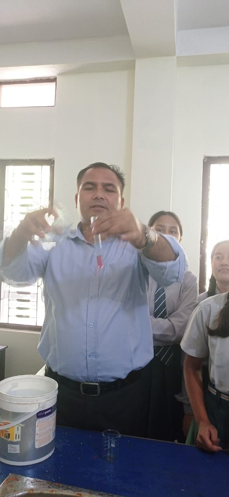
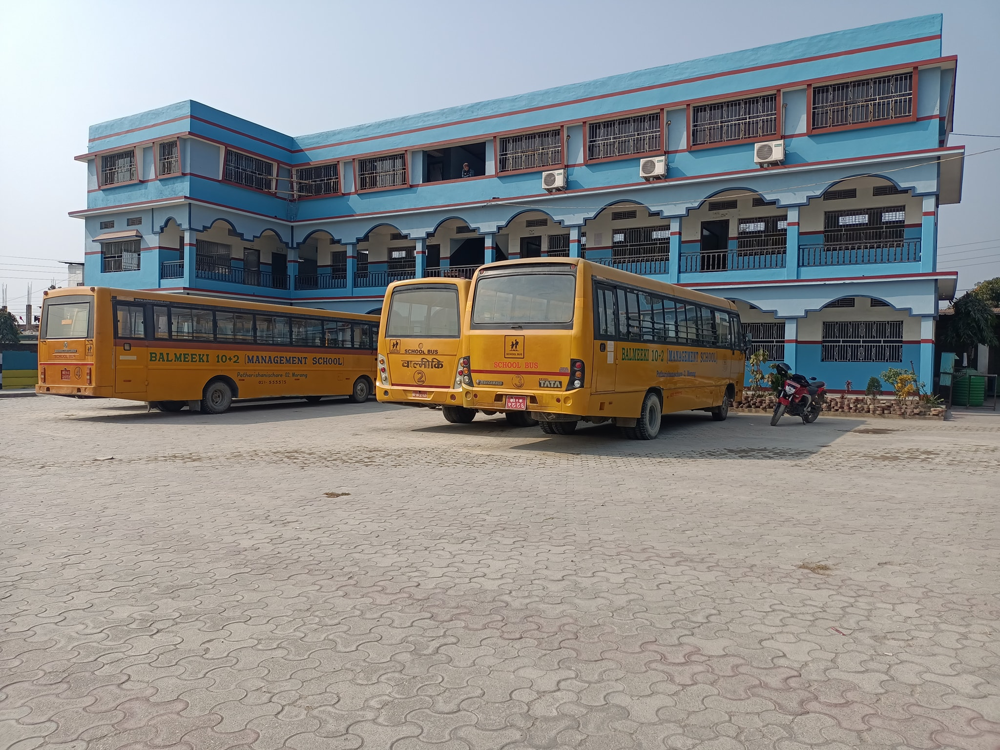

Facilities
Laboratory
Science Lab

At Balmeeki School, we are committed to providing a
comprehensive education that nurtures the curiosity and
scientific inquiry of our students. As part of this
commitment, we have established a state-of-the-art
Science Laboratory dedicated to enhancing students'
understanding and practical application of scientific
concepts.
Our Science Laboratory is a vibrant and dynamic space where students engage in hands-on experiments, observations, and investigations. Equipped with modern scientific equipment, instruments, and resources, it provides a stimulating environment for students to explore the fascinating world of science. From conducting chemical reactions to exploring the wonders of biology, our laboratory is designed to foster a deep understanding of scientific principles and develop critical thinking skills.
Under the guidance of our experienced and dedicated science teachers, students are encouraged to ask questions, make predictions, and analyze their findings. Through engaging experiments and collaborative projects, they develop essential scientific skills such as observation, measurement, data analysis, and problem-solving. Our laboratory serves as a platform for students to apply theoretical knowledge learned in the classroom, promoting a deeper understanding of scientific concepts.
Safety is of paramount importance in our Science Laboratory. We strictly adhere to safety protocols and provide appropriate safety equipment to ensure a secure learning environment. Students are trained in laboratory safety procedures and are encouraged to practice responsible behavior and ethical conduct during their experiments.
The Science Laboratory at Balmeeki School is not just a physical space; it is a place where students develop a lifelong love for science. It inspires them to become curious, inquisitive, and confident learners who are well-equipped to embrace the challenges of the scientific world. Through practical experiences in our laboratory, students develop a solid foundation in science, fostering a passion for exploration and discovery that will empower them in their academic journey and future endeavors.
Our Science Laboratory is a vibrant and dynamic space where students engage in hands-on experiments, observations, and investigations. Equipped with modern scientific equipment, instruments, and resources, it provides a stimulating environment for students to explore the fascinating world of science. From conducting chemical reactions to exploring the wonders of biology, our laboratory is designed to foster a deep understanding of scientific principles and develop critical thinking skills.
Under the guidance of our experienced and dedicated science teachers, students are encouraged to ask questions, make predictions, and analyze their findings. Through engaging experiments and collaborative projects, they develop essential scientific skills such as observation, measurement, data analysis, and problem-solving. Our laboratory serves as a platform for students to apply theoretical knowledge learned in the classroom, promoting a deeper understanding of scientific concepts.
Safety is of paramount importance in our Science Laboratory. We strictly adhere to safety protocols and provide appropriate safety equipment to ensure a secure learning environment. Students are trained in laboratory safety procedures and are encouraged to practice responsible behavior and ethical conduct during their experiments.
The Science Laboratory at Balmeeki School is not just a physical space; it is a place where students develop a lifelong love for science. It inspires them to become curious, inquisitive, and confident learners who are well-equipped to embrace the challenges of the scientific world. Through practical experiences in our laboratory, students develop a solid foundation in science, fostering a passion for exploration and discovery that will empower them in their academic journey and future endeavors.
Computer Lab
At Balmeeki School, we understand the importance of
equipping our students with essential computer skills in
today's digital world. To facilitate their learning and
growth in this area, we have established a well-equipped
Computer Lab dedicated to teaching children the
fundamentals of technology and computer science.
Our Computer Lab is designed to provide a dynamic and interactive learning environment for students. It is equipped with modern computers, software applications, and high-speed internet connectivity, allowing students to explore various aspects of computer science. From learning basic computer operations to coding and programming, our lab offers a comprehensive curriculum that caters to students of different ages and skill levels.
Under the guidance of our experienced computer instructors, students are introduced to the fundamental concepts of computer science. They learn how to navigate operating systems, use productivity tools, develop problem-solving skills, and gain an understanding of coding principles. Through engaging activities, interactive tutorials, and hands-on projects, students develop both practical skills and a deeper understanding of the digital world.
Our Computer Lab also serves as a platform for students to explore other areas such as multimedia creation, digital art, and robotics. It encourages creativity, critical thinking, and collaborative work as students engage in projects that integrate technology into various disciplines.
We prioritize the safety and security of our students in the Computer Lab. We have strict internet usage policies in place and provide guidance on responsible digital citizenship. Our lab is equipped with appropriate security measures to ensure a safe online learning environment for all students.
The Computer Lab at Balmeeki School is not just a place to learn technical skills; it is a space where students develop a digital mindset and become proficient users of technology. We strive to foster a passion for innovation and empower students with the tools they need to thrive in a technology-driven world. Through our Computer Lab, we aim to prepare students to be confident, adaptable, and responsible digital citizens who are ready to embrace the challenges and opportunities of the future.
Our Computer Lab is designed to provide a dynamic and interactive learning environment for students. It is equipped with modern computers, software applications, and high-speed internet connectivity, allowing students to explore various aspects of computer science. From learning basic computer operations to coding and programming, our lab offers a comprehensive curriculum that caters to students of different ages and skill levels.
Under the guidance of our experienced computer instructors, students are introduced to the fundamental concepts of computer science. They learn how to navigate operating systems, use productivity tools, develop problem-solving skills, and gain an understanding of coding principles. Through engaging activities, interactive tutorials, and hands-on projects, students develop both practical skills and a deeper understanding of the digital world.
Our Computer Lab also serves as a platform for students to explore other areas such as multimedia creation, digital art, and robotics. It encourages creativity, critical thinking, and collaborative work as students engage in projects that integrate technology into various disciplines.
We prioritize the safety and security of our students in the Computer Lab. We have strict internet usage policies in place and provide guidance on responsible digital citizenship. Our lab is equipped with appropriate security measures to ensure a safe online learning environment for all students.
The Computer Lab at Balmeeki School is not just a place to learn technical skills; it is a space where students develop a digital mindset and become proficient users of technology. We strive to foster a passion for innovation and empower students with the tools they need to thrive in a technology-driven world. Through our Computer Lab, we aim to prepare students to be confident, adaptable, and responsible digital citizens who are ready to embrace the challenges and opportunities of the future.
Transportation
Buses and Vans

The school prioritizes the safety and convenience of its
students by offering a reliable transportation facility.
With a dedicated fleet of buses, the school provides
transportation services to and from the campus for
students residing within the areas of Patharisanischare,
Mangalbare, Kanepokhari, and Aaitabare. This
transportation service is available at a reasonable
cost, ensuring accessibility for all students.
The school administration takes great care in maintaining the buses, ensuring that they are in excellent condition to minimize any potential problems or irregularities during the commute. However, it is important to note that in unforeseen circumstances or situations beyond the school's control, students may need to arrange alternative means of transportation on their own.
By offering transportation services, the school aims to enhance the commuting experience for students and promote a safe and secure journey to and from school. It is an added convenience that allows students to focus on their studies and extracurricular activities without having to worry about transportation logistics.
The school administration takes great care in maintaining the buses, ensuring that they are in excellent condition to minimize any potential problems or irregularities during the commute. However, it is important to note that in unforeseen circumstances or situations beyond the school's control, students may need to arrange alternative means of transportation on their own.
By offering transportation services, the school aims to enhance the commuting experience for students and promote a safe and secure journey to and from school. It is an added convenience that allows students to focus on their studies and extracurricular activities without having to worry about transportation logistics.
Hygeine Foods
Cafeteria
In our school, we understand the importance of providing
hygienic and nutritious food options to our students.
That's why we take pride in our cafeteria, which is
dedicated to serving high-quality and healthy meals.
With a focus on hygiene and cleanliness, we ensure that
all the food prepared in our cafeteria meets strict
standards.
Our cafeteria is designed to create a pleasant dining experience for students. The bright and welcoming atmosphere encourages students to enjoy their meals and socialize with their peers. Our dedicated staff members work tirelessly to prepare a diverse menu that offers a balance of tasty and nutritious options.
We believe that healthy eating habits contribute to the overall well-being and academic performance of our students. Therefore, we prioritize using fresh ingredients and follow recommended guidelines for meal preparation. Our menu includes a variety of choices, including vegetarian and allergy-friendly options, to cater to the diverse dietary needs of our student population.
In addition to providing nourishing meals, we also promote an eco-friendly approach in our cafeteria. We encourage the use of reusable containers and implement recycling practices to minimize waste and reduce our environmental impact. The cafeteria is not just a place to satisfy hunger; it is a space where students can gather, unwind, and enjoy their meals in a safe and comfortable environment. We continuously strive to improve and enhance our cafeteria services, ensuring that every student has access to healthy and delicious food options that support their overall well-being and academic success.
Our cafeteria is designed to create a pleasant dining experience for students. The bright and welcoming atmosphere encourages students to enjoy their meals and socialize with their peers. Our dedicated staff members work tirelessly to prepare a diverse menu that offers a balance of tasty and nutritious options.
We believe that healthy eating habits contribute to the overall well-being and academic performance of our students. Therefore, we prioritize using fresh ingredients and follow recommended guidelines for meal preparation. Our menu includes a variety of choices, including vegetarian and allergy-friendly options, to cater to the diverse dietary needs of our student population.
In addition to providing nourishing meals, we also promote an eco-friendly approach in our cafeteria. We encourage the use of reusable containers and implement recycling practices to minimize waste and reduce our environmental impact. The cafeteria is not just a place to satisfy hunger; it is a space where students can gather, unwind, and enjoy their meals in a safe and comfortable environment. We continuously strive to improve and enhance our cafeteria services, ensuring that every student has access to healthy and delicious food options that support their overall well-being and academic success.